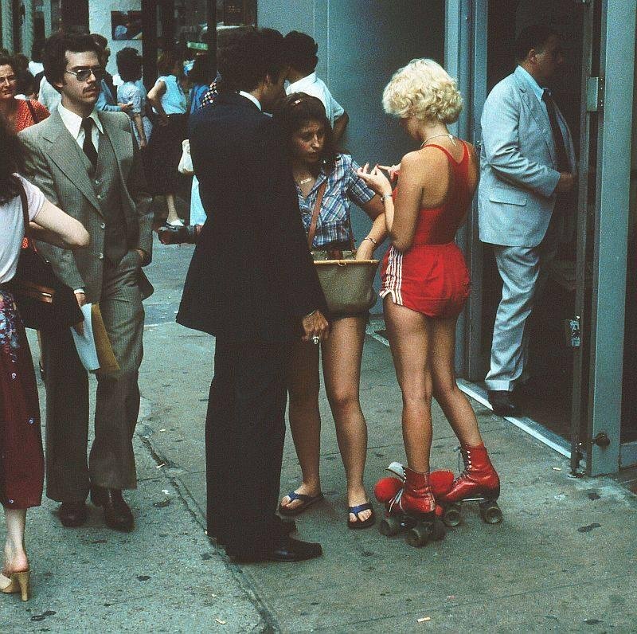

Ellis Island in the 70s.
Ellis Island in the 70s.
The Beatles playing at Shea Stadium, 1965.
In front of the Empire State Building, 1983.

Photo by Kenneth Siegel


New York. Times Square on a rainy day. 1943. Cue the jazz.
Kyle piece on the 1 train, 1980s.
Tagged insides, 1980s.
Columbus Ave, between 82nd and 83rd, 1982.
Broadway and 89th Street, 1971. Home sweet home.

NYC Christmas shopping. Mayhem, even back in 1957.

Christmas window shopping at Macy’s, 1958.

You’re in the wrong neck of the woods, pardner. NYC 1955.

Wha you lookin’ at?

Times Square, 1961.
Kneeling Bus…Fifth Avenue…April 1979 by Shilpot on Flickr.

Times Square, 1955. Cool cabs. Cooler movie marquee.
Some high-class lovin’ going on in Jersey, in the shadows of the WTC. Happy Valentine’s Day.

Whatchu lookin’ at?

Robert Redford and kids in NYC, 1969.

Fox Street, South Bronx, 1983

Zephyr Revolt burning up the 3 train, 1981.
Staten Island ferry, 1960s.

Pleasant people walking through somewhere unpleasant. NYC 1985.

South Bronx, 1980s. Longfellow and 178th.

Union Square, 1974
If I run across any, I’ll definitely post them!
South Bronx in the 1980s. Bristow and 170th.

WTC 1983
1st Ave and 83rd St, 1983.

NYC prosthetic supply store, 1981.
Um, that’s okay, maybe I’ll stay on the train.

Duck-duck-goose in Harlem, 1978.

Side-show of the human curiosities “Jolly Trixie and Princess Wee Wee” at Coney Island. C.1908.
Jack Dempsey’s, 1967
Believe it or not, this is 72nd Street in 1888.
Where’s Papaya King?

Midtown Manhattan, 1979. Photo by Frank Florianz.
Pro-miniskirt rally, 1970.

Market Diner, 1980s.

Traffic on W. 41st Street, 1960s.
Beatles fans at Kennedy Airport, 1965, waiting for the Fab Four to arrive. Swoon.

The Peppermint Lounge, 1965.
According to the interwebs, this was where The Twist dance craze got started.
Keith Haring doing his thing.
Union Square in the 1980s.
You can’t read that map, son!
Bombed!